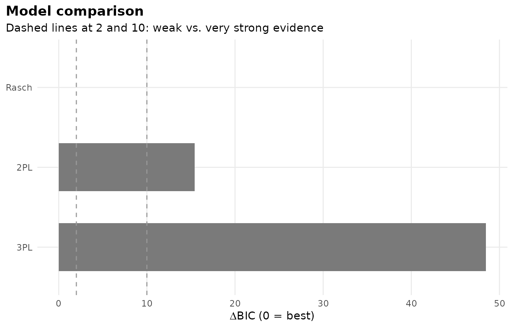
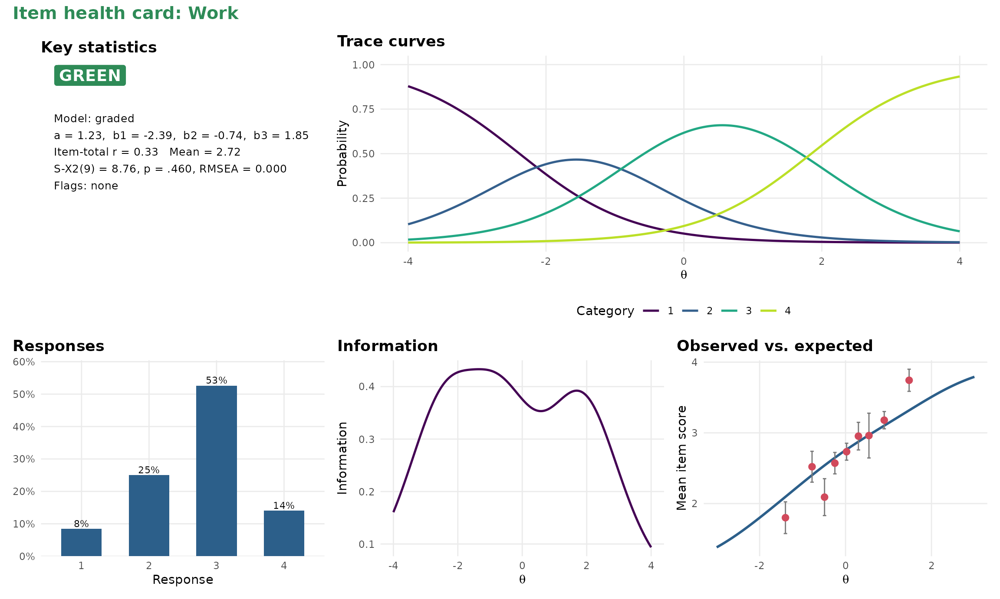
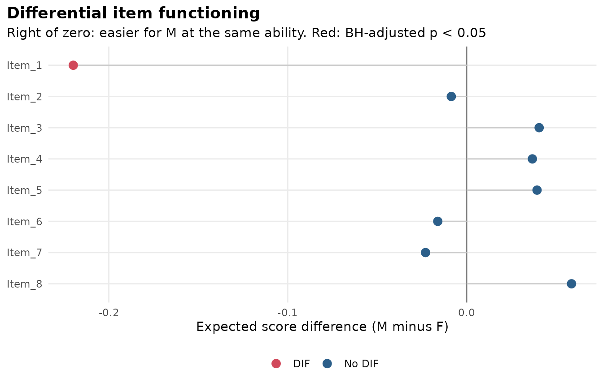
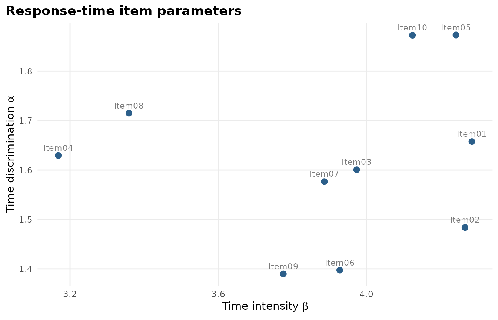
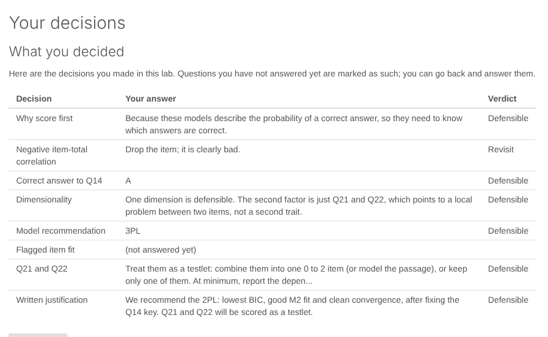

Each figure below is made by the code above it, with data that ships with mirt or mirtverse. Every plot is a ggplot2 object, so you can change its theme, labels and colours with ordinary ggplot2 code.
library(mirtverse)
data <- expand.table(LSAT7)
mod <- mirt(data, 1, itemtype = "2PL", verbose = FALSE)Outputs to share
These run in a browser with nothing installed.
| Output | Made with | Example |
|---|---|---|
| Interactive results dashboard |
mv_dashboard(), export_dashboard()
|
Open the live dashboard |
| Printable cheat sheet | Two pages, by task | |
| Interactive teaching labs | run_lab() |
Teaching labs |
| Online book | Worked examples and exercises | Read the book |
Choosing a model
select_model() compares candidate models and explains
its choice.
sel <- select_model(data)
autoplot(sel)
Item health card
A one-page summary of a single item for review meetings, with a traffic-light status.

Differential item functioning
set.seed(1)
a <- matrix(rlnorm(8, 0.2, 0.3)); d <- matrix(rnorm(8))
d2 <- d; d2[1] <- d2[1] - 1
dif_data <- rbind(simdata(a, d, 400, itemtype = "2PL"),
simdata(a, d2, 400, itemtype = "2PL"))
res <- dif(dif_data, group = rep(c("F", "M"), each = 400))
gg_dif(res)
Response times
sim <- sim_rt(N = 500, J = 10, rapid = 0.05, seed = 1)
rt_mod <- mirt(sim$responses, 1, verbose = FALSE)
fit <- fit_rt(rt_mod, sim$rt)
autoplot(fit)
Teaching labs
The labs run in RStudio’s viewer or a browser. See Teaching labs for all ten.

A decision screen from Lab 2.